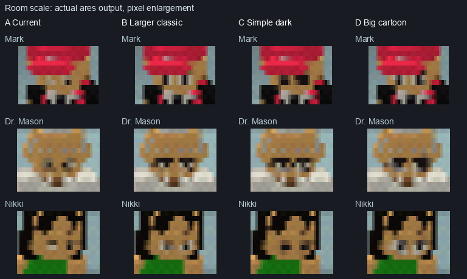
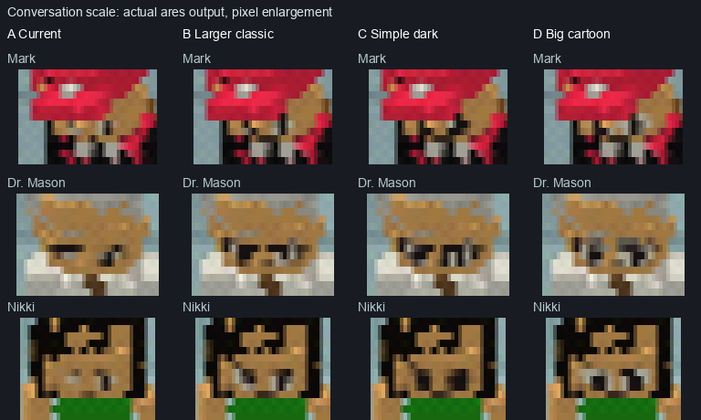
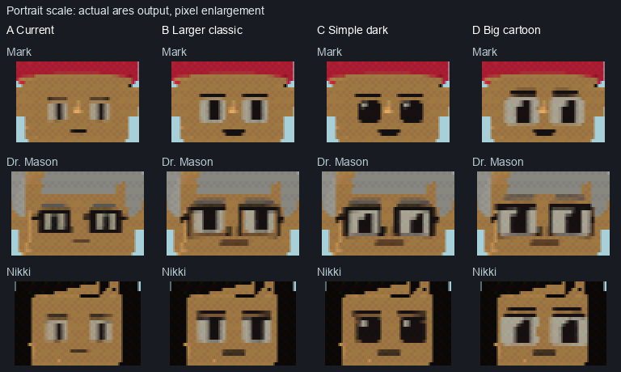

Face options
Actual N64 video output from ares. The game’s current faces are unchanged.
Room scale
Near row: Mark, Dr. Mason, Nikki. Far row: Ronald, Ken, Granny.

Faces enlarged with nearest-neighbor pixels. Full frames below.
A · CurrentExisting faces.B · Larger classicLarger whites and pupils.C · Simple darkDark eyes with small highlights.D · Big cartoonOversized whites and pupils. Conversation scale
Left to right: Mark, Dr. Mason, Nikki, Ronald, Ken, Granny.

Faces enlarged with nearest-neighbor pixels. Full frames below.
A · CurrentExisting faces.B · Larger classicLarger whites and pupils.C · Simple darkDark eyes with small highlights.D · Big cartoonOversized whites and pupils. Portrait scale
Mark, Dr. Mason and Nikki at the naming-screen portrait scale.

Faces enlarged with nearest-neighbor pixels. Full frames below.
A · CurrentExisting faces.B · Larger classicLarger whites and pupils.C · Simple darkDark eyes with small highlights.D · Big cartoonOversized whites and pupils.